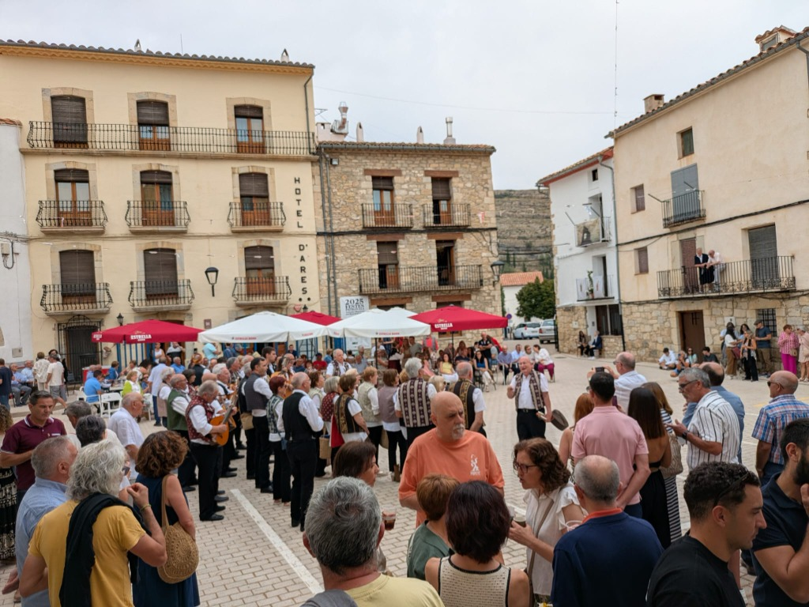
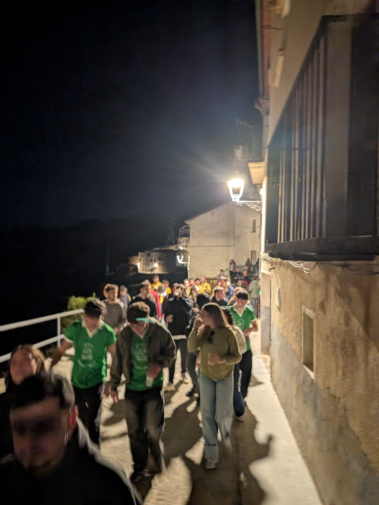
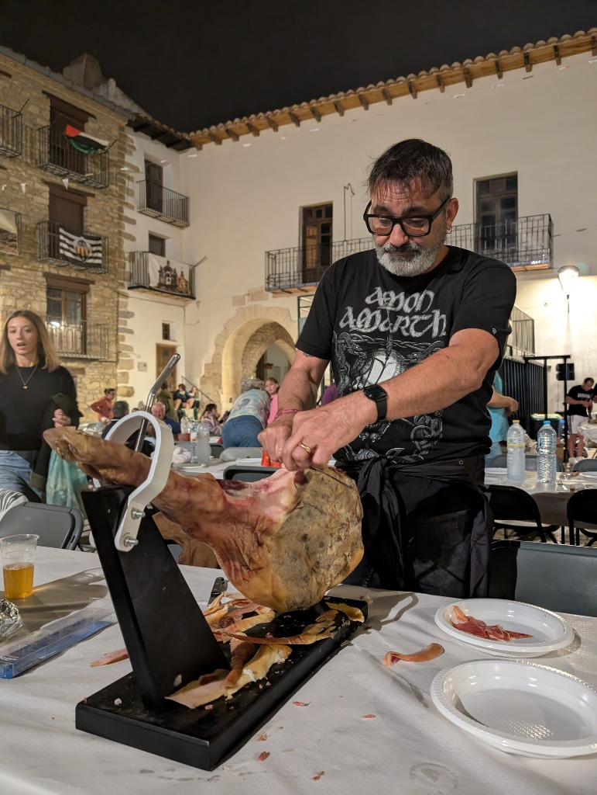
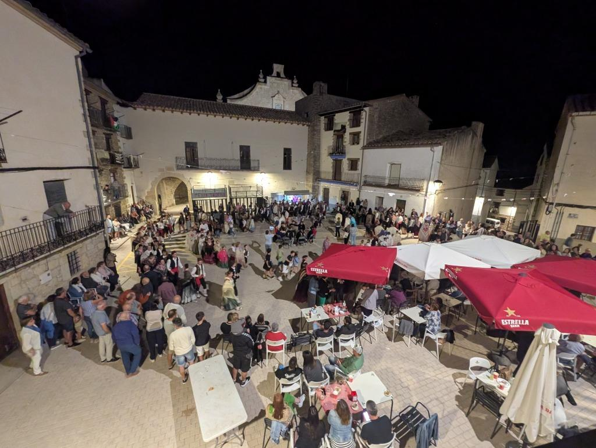
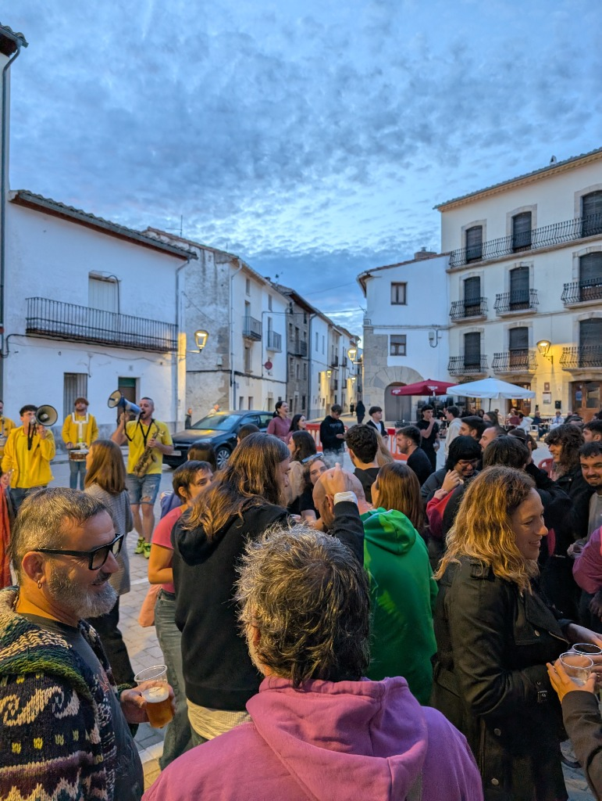

Conoce la historia de La Comi, un grupo de personas que trabajamos de manera voluntaria para mantener vivas las Fiestas de Ares del Maestrat.
La Comisión de Fiestas de Ares del Maestrat está formada por un grupo de vecinos y jóvenes vinculados al pueblo que, de forma altruista, dedicamos nuestro tiempo a organizar, gestionar y promover los actos festivos a lo largo de todo el año.
La Comi nace en 2022 como evolución natural de la Asociación Juventud de Ares. Así, se integran varias generaciones de vecinos y vecinas con el fin de proponer nuevas ideas y dinamizar la cultura del pueblo.
La Comisión es una asociación abierta donde cualquier vecino del pueblo puede unirse.
Tratamos de respetar al máximo las tradiciones locales del pueblo.
Creamos espacios de encuentro, comidas populares y bailes que unen a vecinos de todas las edades, veraneantes y visitantes en un ambiente acogedor.
Apostamos por grupos de proximidad, charangas, teatro y actividades innovadoras que enriquezcan la vida local.
La fiesta se vive en las calles. Compartimos algunos de los momentos más significativos de hermandad, tradición y alegría compartida de los últimos años.




